![]()
graph TB
A[Validità]
A --> B[Facciata]
A --> C[Contenuto]
A --> E[Costrutto]
E --> F(Convergente)
E --> G(Divergente)
E --> H(Fattoriale)
A --> D[Criterio]
Introduzione alla metodologia della ricerca
ADCOM 2025-2026
Ultimo aggiornamento: 02-24-2026
Processo scientifico
Processo scientifico
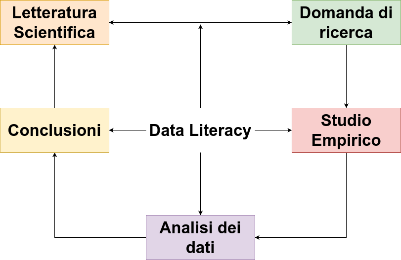
Adapted from Jhangiani et al. 2019
Letteratura <–> Domanda di ricerca
Il punto di partenza è sempre la formulazione di domande di ricerca.
Questo processo è bidirezionale perchè la letteratura scientifica può essere fonte o de le nostre domande di ricerca.
Studio empirico
Possiamo identificare 3 aree generali relative alla realizzazione di uno studio empirico:
- Disegno di ricerca
- Raccolta dati e campionamento
- Misurazione
… e l’analisi dei dati?
Non ho messo l’analisi dei dati perchè è importante distinguere tra:
- analisi dei dati come azione pratica: ho il dataset e applico il modello di analisi
- analisi dei dati come mindset e data literacy
Il primo è facile, è sufficiente conoscere uno strumento (R, SPSS, Jamovi, etc.) e sapere quello che si deve fare.
Il secondo invece richiede conoscenza, spirito critico, ragionamento e allenamento. Non è uno step separato ma accompagna tutti i momenti della ricerca.
Conoscere la statistica permette di valutare uno studio in letteratura, conoscere il disegno di ricerca migliore, valutare le misure migliori e cosi via. Questo è quello su cui ci focalizzeremo maggiormente durante il corso.
Data literacy
Data literacy is the ability to collect, manage, evaluate, and apply data, in a critical manner (Risdale et al., 2015)
Metodologia della ricerca
All’interno della metodologia della ricerca possiamo individuare tre filoni fondamentali:
- Ricerca qualitativa
- Ricerca quantitativa
- Mixed Methods (qualitativa + quantitativa)
Noi ci focalizzeremo solo su quella quantitativa ma, soprattutto in Psicologia di Comunità è molto rilevante ed importante anche quella qualitativa. Da qui in poi, ci riferiamo a ricerca sperimentale come ricerca quantitativa.
Disegni di ricerca
All’interno della ricerca quantitativa possiamo identificare:
- Ricerca Sperimentale
- Ricerca Quasi-Sperimentale
- Ricerca Correlazionale
Ricerca sperimentale
Possiamo identificare 4 aspetti centrali che caratterizzano la ricerca sperimentale:
- Manipolazione: una o più variabili vengono attivamente manipolate creando due o più condizioni (ad esempio trattamento vs placebo)
- Misurazione: una o più variabili vengono misurate (considerando tutti gli aspetti che abbiamo illustrato prima)
- Confronto: le condizioni create manipolando le variabili vengono confrontate rispetto alle variabili misurate (ad esempio performance nel gruppo trattato vs placebo)
- Controllo: le variabili che non vengono manipolate, vengono controllate. Ci sono varie modalità di controllo sperimentale.
Questi 4 elementi permettono idealmente di poter trarre delle conclusioni causa-effetto della manipolazione sull’outcome.
Terminologia
Quando parliamo di esperimenti, ricerche e analisi dati la terminologia è importante:
- \(y\) sono gli outcomes (uno o più). Solitamente chiamate anche variabili dipendenti (ma preferisco outcomes)
- \(x\) sono i predittori. Solitamente chiamate anche variabili indipendenti (ma preferisco predittori)
All’interno dei predittori possiamo trovare:
- variabili che rappresentano manipolazioni sperimentali
- variabili che non vengono manipolate e sono chiamate estranee ma possono avere un impatto su \(x\) e/o \(y\). Alcune di queste vengono misurate e diventano dei veri e propri predittori mentre altre esistono solo livello teorico ma non vengono misurate.
Terminologia
- dataset è la struttura dati di dimensione \(n \times k\) dove \(n\) sono le righe e \(k\) le colonne (pensate ad un foglio Excel). I predittori \(x\) sono una parte delle colonne \(k\) (o una loro trasformazione) che utilizziamo in un modello statistico.
- unità statistiche sono la l’elemento base o l’entità elementare su cui vengono misurati i caratteri oggetto di indagine all’interno di una popolazione statistica. Possono essere persone, animali, misurazioni nel tempo. A livello pratico è il significato delle \(n\) righe nel dataset.
Terminologia
Quando parliamo di variabili è importante anche distinguere tra variabili osservate e latenti.
- Per costrutto o variabile latente intendiamo qualcosa di non direttamente osservabile ma che risulta essere il nostro oggetto d’interesse. Senso di comunità, autostima, depressione, benessere, etc. sono tutte variabili latenti.
- Essendo non direttamente osservabili dobbiamo usare degli indicatori che sono legati ed informativi della variabile latente.
- Il legame tra variabile latente e indicatori si chiama operazionalizzazione.
- è importante distinguere variabili osservate/manifeste come l’età, peso, altezza, etc. rispetto a variabili osservate utilizzate come indicatori di costrutti latenti.
Esempio
Il classico esempio è quello di un trattamento/intervento. La manipolazione consiste nel creare due condizioni (trattamento e controllo). Viene misurata una variabile che rappresenta l’outcome (esempio autostima). Si confrontano i punteggi tra le due condizioni controllando per tutte le altre variabili. Un’eventuale differenza tra le due condizioni è dovuta all’effetto causale della manipolazione sperimentale.
Ricerca sperimentale e oltre
Questo è uno schema riassuntivo ma non esaustivo dei diversi tipi di ricerca. I nodi decisionali sono quelli verdi mentre i vari disegni sono in rosso.
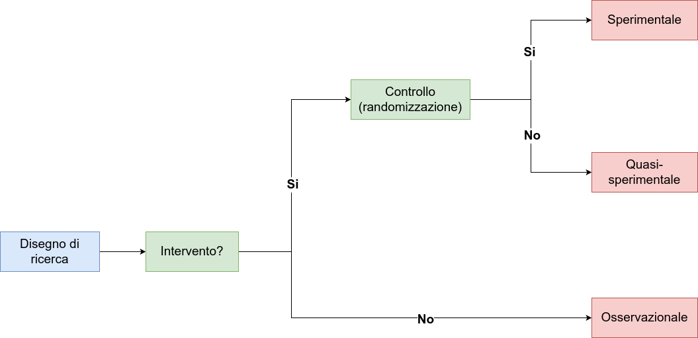
Primo nodo, intervento
Il primo nodo decisionale riguarda la presenza o meno di un intervento. Un intervento viene inteso come una manipolazione sperimentale. In termini medici è un farmaco, un protocollo di cura, etc. In termini psicologici può essere un intervento educativo, psicoterapia, etc.
Possiamo anche considerare un intervento un evento esterno (catastrofe, nuova legge, cambiamento, etc.) che quindi crea delle condizioni sperimentali anche senza l’intervento sperimentale diretto.
In caso non si faccia nessun intervento la ricerca viene definita osservazionale o correlazionale perchè l’interesse è sulla relazione non causale tra un insieme di variabili.
Secondo nodo, il controllo delle variabili
Il controllo delle variabili è una caratteristica degli esperimenti e quasi-esperimenti. Tuttavia ci sono diversi tipologie di controllo sperimentale:
- Randomizzazione: a priori, assegnare i soggetti in modo casuale alle condizioni sperimentali
- Fissazione: a priori, selezionare i soggetti in modo che alcune variabili non possano avere un impatto
- Controllo statistico: a posteriori, controllare l’impatto delle variabili (regressione multipla, lo vedremo)
La randomizzazione (che vedremo a breve) è la tipologia di controllo sperimentale la cui presenza distingue gli esperimenti (puri) rispetto ai quasi-esperimenti. Nella pratica significa che i soggetti sperimentali vengono assegnati in modo totalmente casuale alle condizioni sperimentali (ad esempio gruppo sperimentale e controllo).
Perchè è necessario il controllo delle variabili?
Immaginate di raccogliere dei dati di bambinə e ragazzə dai 6 ai 18 anni. Raccogliete punteggi a test di matematica e raccogliete il peso. Non avete altre informazioni.
Andate a questo link e provate ad esplorare il dataset. Cosa notate?
Perchè è necessario il controllo delle variabili?
A questo link https://www.tylervigen.com/spurious-correlations sono presenti diversi esempi reali di quelle che si chiamano correlazioni spurie. Sono un bellissimo esempio del perchè, la relazione tra due variabili per essere interpretata in modo causale, necessita del controllo sperimentale.
Third-variable problem
Esiste un problema noto in analisi dei dati che si chiama il third-variable problem e rappresenta il problema che abbiamo visto con le abilità matematiche e le correlazioni spurie. Più formalmente, la relazione tra un predittore \(x\) (anche un intervento) e l’outcome \(y\) può essere spiegata totalmente o in parte dalla presenza di una variabile estranea chiamata confounder.
L’obiettivo del controllo sperimentale, in particolare della randomizzazione, è quello di limitare se non eliminare l’impatto dei confounder. Mentre fissare a priori alcune variabili o il controllo statistico richiedono di conoscere e misurare tutti i possibili confounders, la randomizzazione permette in teoria di eliminare l’impatto anche di variabili non misurate.
Confounder, un esempio
In pratica, \(z\) (l’età in questo caso) è una variabile legata sia a \(x\) che a \(y\) che non osserviamo ma spiega totalmente (o parzialmente) la relazione \(y \sim x\). Vedremo come tenere conto di \(z\) statisticamente ma i confounder possono renderci la vita molto complessa.
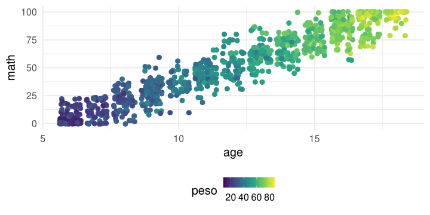
Directed acyclic graph
Questo tipo di grafici sono molto utili per rappresentare graficamente modelli statistici ed ipotesi.
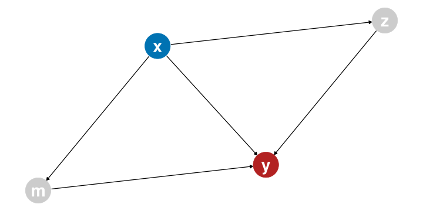
Directed acyclic graph
Non li vedremo nel dettaglio, ma sono utili per semplici modelli. Una piccola legenda:
- la freccia \(y \leftarrow x\) significa che \(x\) ha un effetto causale su \(y\)
- il colore rosso indica la variabile outcome
- il colore blu indica una variabile manipolata (o trattamento)
- il colore verde indica una variabile non manipolata ma d’interesse
- il colore grigio indica una variabile osservata (ma non manipolata, ad esempio età)
Randomizzazione, perchè funziona?
Immaginate di avere 100 persone, un trattamento \(x\) ed un outcome \(y\). Immaginate che per qualche ragione, l’età abbia un impatto sia sull’outcome \(y\). Immaginate anche che i soggetti con età maggiore (in media) siano assegnati al gruppo di sperimentale.
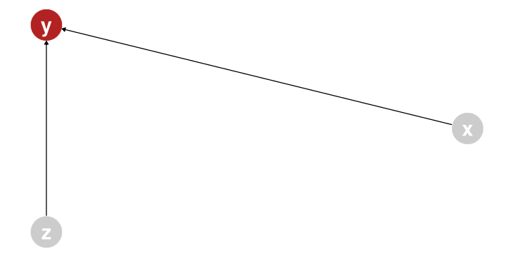
Randomizzazione, perchè funziona?
Nello scenario precedente non è possibile distinguere chiaramente l’effetto dell’età da quello del trattamento.
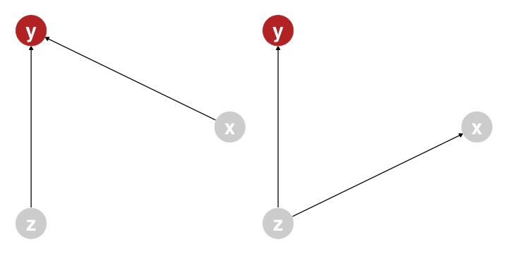
Randomizzazione, perchè funziona?
La randomizzazione mitiga (e in teoria rimuove) l’effetto di variabili non direttamente controllate assegnando gli individui in modo casuale al trattamento.
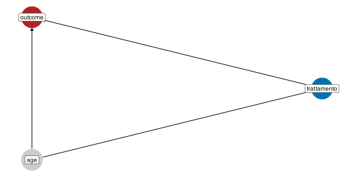
Randomizzazione, vediamola in azione
Andate a questo link (con un account Google):
Randomizzazione e DAG
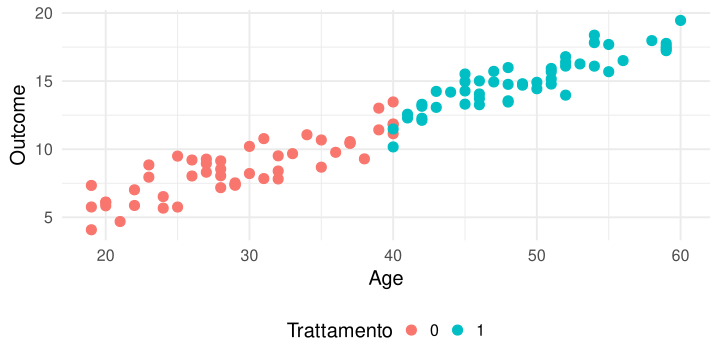
Perchè non randomizziamo sempre?
Ci sono delle condizioni dove non è possibile randomizzare per motivi etici o empirici.
Immaginate di dover capire l’impatto sulla salute di un certo comportamento (e.g., mangiare un certo alimento). Idealmente dovreste prendere in modo casuale soggetti, assegnarli una dieta e vedere l’impatto.
Perchè non randomizziamo sempre?
Il problema è che non potendo randomizzare, non è possibile isolare chiaramente l’effetto del predittore d’interesse.
In realtà possiamo:
- Includere tutte le possibili variabili come predittore (regressione multipla) ma questo è valido solo se siamo sicuri di averle inserite tutte (molto poco plausibile)
- Evidenziare un’associazione tra \(x\) e \(y\) ma senza poterne trarre una relazione causale.
Vedremo quando parleremo di regressione cosa significa usare questi approcci.
Disegni quasi-sperimentali
Una scuola decide di implementare un nuovo protocollo di educazione sessuo-affettiva considerato innovativo e fondamentale per il benessere e lo sviluppo. Decide di implementare uno studio d’efficacia confrontando il nuovo protocollo con quello standard implementato in un’altra scuola.
E’ chiaro che, nonostante sia presente un intervento (il programma educativo) l’assegnazione al gruppo sperimentale e controllo non è casuale. Ci potrebbero essere delle differenze tra scuole che possono influenzare l’effetto del protocollo educativo. Differenze di tipo geografico, insegnanti, status-socio economico, etc.
In questo caso, la relazione causale dimostrabile è più debole (non possiamo randomizzare) ma possiamo usare le altre modalità di controllo (fissazione e statistico).
Disegni correlazionali
Un gruppo di ricerca decide di studiare la relazione tra senso di comunità, benessere percepito e performance accademiche in un gruppo di studenti universitari. Raccoglie un campione, misura le variabili d’interesse e stima le relazioni tra le variabili.
In questo caso non abbiamo ne intervento ne randomizzazione. Stiamo stimando le relazioni tra variabili senza poter trarre conclusioni di tipo causale. Questo tipo di ricerca è molto diffuso in Psicologia, soprattutto in Psicologia Sociale e di Comunità.
Validità dei disegni di ricerca
Ci sono due tipi principali di validità quando si valuta un disegno di ricerca (e poi di conseguenza i risultati):
- Validità Interna
- Validità Esterna
Validità Interna
La validità interna di uno studio fa riferimento alla possibilità di trarre conclusioni causali riguardo le relazioni tra variabili. All’aumentare del controllo sperimentale e delle manipolazioni aumenta la validità interna perche siamo in grado di isolare l’effetto di una o più variabili.
Validità Esterna
La validità esterna fa riferimento al concetto di generalizzabilità. Quello che osservo in un contesto sperimentale, controllando le variabili ed isolando gli effetti può diventare meno generalizzabile.
Ad esempio, se decido di studiare l’effetto della cannabis negli adolescenti e seleziono un campione ristretto controllando tutte le variabili posso trarre conclusioni più causali riguardo l’impatto della cannabis ma non posso generalizzare alla popolazione generale.
Allo stesso modo, ridurre il controllo sperimentale mi permette di generalizzare maggiormente avendo incluso una popolazione più eterogenea, riducendo però la capacità di descrivere gli effetti in modo causale.
Misurazione Psicologica
Diverse variabili, diverse analisi
Prima di imparare ad analizzare i dati è importante capire come i dati vengono raccolti e strutturati. Quando raccogliamo o trattiamo una variabile, chiediamoci sempre quale sia la tipologia. Il tipo di variabile influenza diversi aspetti, come:
- quali statistiche descrittive sono sensate e quali sono più informative
- le rappresentazioni grafiche più informative
- il modello statistico più adeguato per quella variabile
Variabili, le tipologie principali
Possiamo individuare 4 tipologie principali di variabili:
- nominale
- ordinale
- intervalli
- rapporti
Questa viene anche chiamata tassonomia NOIR.
Variabili di tipo nominale
Le variabili di tipologia nominale sono anche definite variabili categoriali. Sono quindi delle etichette, verbali o numeriche, che vengono assegnate ad una tipologia di osservazione. Ad esempio:
- Regione di residenza
- Colore degli occhi
- Religione
- Categoria diagnostica
Le diverse categorie sono interscambiabili quindi non c’è un ordine predefinito. L’unica operazione consentita è quella di contare le diverse categorie calcolando, in vari modi, distribuzioni di frequenza.
Variabili di tipo nominale, esempi:
Lo vedremo meglio nelle prossime lezioni, ma possiamo rappresentare le frequenze tramite dei barplot:
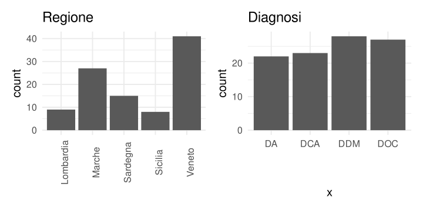
Variabili di tipo nominale, quali operazioni?
Caution
Cosa succede, secondo voi, se dovessi calcolare la media di una variabile categoriale?
E se dovessi calcolare la varianza o la mediana?
In sostanza, la tipologia di variabile è spesso legata anche a quali operazioni sono permesse, sensate o informative. In questo caso, calcolare la regione media non ha alcun senso.
Rivedremo le statistiche descrittive ed i grafici ma è importante sapere che ogni tipologia di variabile ha il suo tipo di grafico/statistica.
Variabili di tipo ordinale
Le variabili di tipo ordinale sono quelle più comunemente utilizzate in Psicologia ed anche quelle in un certo senso meno intuitive.
Alcuni esempi:
- Risposte su scale likert
- Status socio-economico (e.g., alto, medio e basso)
- Livello d’istruzione
Variabili di tipo ordinale
Rispetto alle variabili categoriali, le variabili ordinali hanno un ordine. Possiamo quindi pensarle categorie alle quali assegniamo un numero progressivo.
Quello che non è definito per le variabili ordinali, è la distanza tra le categorie. Potremmo assegnare allo status socio-economico 1 = basso, 2 = medio e 3 = alto, come 1.5, 2, 2.1.
In altri termini, la distanza tra le categorie non è nota e quindi non è utilizzabile come informazione.
Variabili di tipo ordinale, esempi:
Anche qui, lo vedremo meglio nelle prossime lezioni ma un grafico a barre, ordinato è un tipo di rappresentazione grafica utilizzabile.
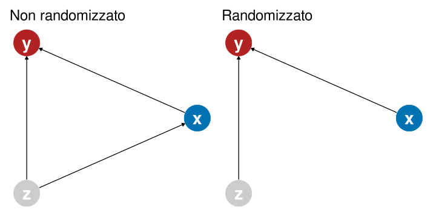
Variabili su scala ad intervalli
Questo è il primo tipo di variabile numerica in senso stretto. Le principali caratteristiche sono:
- L’ordine è significativo (questo viene ereditato dalle variabili ordinali)
- Le differenze (intervalli) tra due valori sono note e costanti per tutta la scala
- Non c’è uno zero assoluto definito come assenza della proprietà misurata
La mancanza di zero assoluto rende quindi non interpretabili i rapporti tra valori, mentre lo sono le differenze.
Variabili su scala ad intervalli: esempi
Alcuni esempi sono:
- Temperatura come ad esempio Celsius o Fahrenheit
- In generale le misure psicologiche come intelligenza, personalità, etc.
- Le date sul calendario
Possiamo dire che la distanza tra un QI di 100 e 110 è la stessa rispetto ad un QI di 115 e 125 (sono 10 punti di QI). Non possiamo dire che una persona che ha QI di 200 sia il doppio più intelligente di un QI di 100.
Variabili su scala ad intervalli: esempi
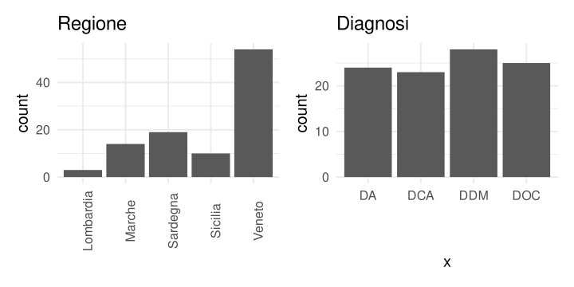
Variabili su scala a rapporti
Questo è il tipo più completo di variabile numerica che solitamente si trova nelle misurazioni fisiche. Eredità tutte le proprietà precedenti aggiungendo la presenza di uno zero assoluto inteso come assenza della proprietà.
Qualche esempio:
- Il tempo inteso come minuti, secondi, millisecondi: tempi di reazione in esperimenti cognitivi
- Segnale psicofisiologico come EEG, ECG, etc.
Tipologia di variabili, riassunto:
Le 4 tipologie di variabili sono gerarchicamente ordinate rispetto alle operazioni permissibili e significative:
- categoriali –> uguaglianza: possiamo dire se due osservazioni sono nella stessa categoria
- ordinali –> ranking: possiamo dire chi è maggiore tra due osservazioni
- intervalli –> distanze: possiamo interpretare la distanza tra due osservazioni rapporti –> rapporti: possiamo calcolare il rapporto tra due osservazioni
Intervalli vs ordinale
Questa tassonomia non viene sempre rispettata. Ad esempio, le variabili ordinali come le scale likert vengono comunemente trattate come scale ad intervalli o anche a rapporti. Ad esempio viene assunto che la differenza tra 1 (per niente) e 2 (poco) sia la stessa che per altri livelli.
Operazioni permissibili
Vedremo meglio quando parleremo delle varie statistiche descrittive. Tuttavia, in base al tipo di variabile ci sono delle operazioni permissibili.
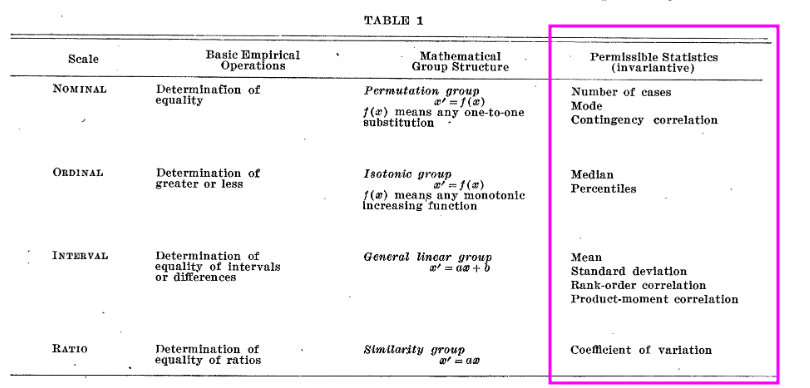
Fonte: Stevens (1946)
Vediamo un esempio insieme
Provate a cercare, scaricare il pdf di questo articolo Robinette et al. (2025):
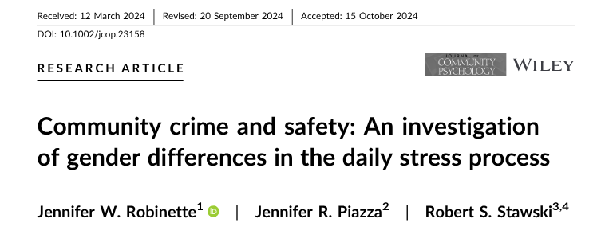
Cercate nel metodo e risultati i vari tipi di variabili utilizzate e classificatele in base al NOIR.
Misurazione Psicologica
La misurazione in Psicologia è forse l’argomento più complesso, critico ed affascinante di tutta la ricerca Psicologica e della Psicometria.
Lo scopo del corso non è quello di fornire una panoramica esaustiva riguardo la misurazione ed il testing ma di fornire uno sguardo critico rispetto alle misure che utilizziamo.
Le differenti variabili (colonne) del nostro dataset sono delle misurazioni più o meno precise di costrutti più o meno definiti.
Capire questo punto e capire come valutare la qualità delle nostre variabili è fondamentale per comprendere i risultati dell’analisi dei dati.
GIGO - Garbage In, Garbage Out
Il GIGO è un principio cardine nell’analisi dei dati. L’idea è che non c’è analisi sofisticata, algoritmo o procedura che possa risolvere il problema della bassa qualità dei dati.
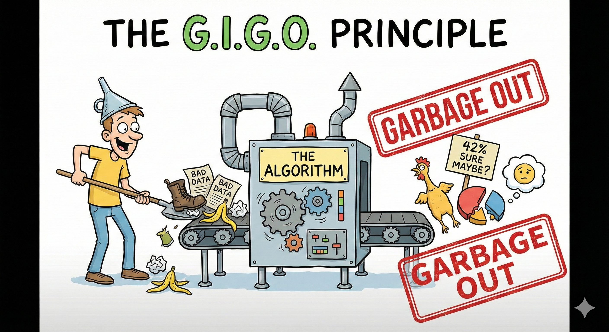
GIGO - Garbage In, Garbage Out
In Psicologia, la qualità dei dati è sempre legata al tipo di strumento, alla sua affidabilità, precisione e alla procedura di acquisizione.
Pensate ad un dataset dove una delle colonne identifica un punteggio ad un questionario di depressione. Vediamo che questo è, per esempio, maggiore in soggetti italiani vs stranieri.
Concludiamo che, per qualche motivo culturale, genetico o psicologico gli italiani abbiano una tendenza maggiore alla depressione.
GIGO - Garbage In, Garbage Out
Tuttavia, non abbiamo misurato la depressione come se misurassimo il peso o l’età ma un insieme di item che in teoria dovrebbero essere legati al costrutto depressione.
L’assunzione implicita è quindi che:
- il questionario misuri effettivamente e principalmente la depressione
- che misurandola più volte, questa sia più o meno simile
- che gli item vengano compresi allo stesso modo
- che gli item siano abbastanza sensibili da differenziare le persone
Qualità della misura
Quindi non è sufficiente avere una misura di depressione ma dobbiamo chiederci:
- quanto è precisa la misura
- quanto è valida e affidabile
- quanto è specifica vs aspecifica
- …
Variabili latenti e osservate
In Psicologia, nella maggior parte dei casi siamo interessati a costrutti detti latenti. Latenti perchè non sono direttamente osservabili.
Non sono direttamente osservabili ma sono indirettamente osservabili tramite degli indicatori. La qualità della nostra osservazione quindi dipende dalla qualità degli indicatori.
Gli indicatori sono ad esempio gli item di un questionario o un insieme di questionari. La variabile latente è ad esempio la depressione.
Un esempio
Vediamo un esempio di item del BDI-II:
- Non sono più irrequieto o teso del solito.
- Mi sento più irrequieto o teso del solito.
- Sono così irrequieto o agitato che è difficile stare fermo.
- Sono così irrequieto o agitato che devo continuare a muovermi o a fare qualcosa.
Perchè questo indicatore viene utilizzato per la depressione secondo voi?
Un esempio
Teoricamente, tra le manifestazioni cliniche della depressione è presente agitazione e irrequietezza. Quindi, se misurassi questa manifestazione mi aspetterei, in media, punteggi elevati in soggetti depressi.
Quindi il collegamento tra indicatore e costrutto latente è teorico e viene assunto o inferito dall’osservazione ma non è scontato.
Inoltre, ci possono essere molti modi diversi di misurare l’irrequietezza che quindi concorrono a misurare (indirettamente) più o meno accuratamente il costrutto latente.
Errore di misurazione
La classical test theory assume che il processo di misurazione porta a rilevare un risultato osservato \(X\) (observed score) che è la somma del punteggio vero \(T\) (true score) e dell’errore \(E\).
\[ X = T + E \]
Questo è un concetto fondamentale perchè l’obiettivo della statistica è quello di, partendo dal dato osservato \(X\) stimare \(T\) tenendo in considerazione l’errore \(E\).
Dati, modelli e residui
Più in generale, ma lo vedremo meglio più avanti, i modelli statistici sono rappresentazioni semplificate della realtà. I modelli \(M\) partono dai dati osservati \(D\) ed in modo più o meno complesso cercano di spiegare quello che succede. Essendo la spiegazione non sempre perfetta, quello che rimane si chiama errore o residuo \(E\).
\[ D = M + E \]
Dati, modelli e residui
La linea blu è il nostro modello \(M\), i punti sono i dati \(D\) e l’errore o residui sono i segmenti rossi \(E\). Diversi modelli si adattano in modo migliore o peggiore ai dati.
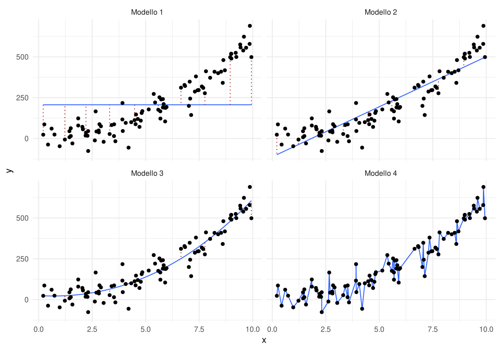
Validità e affidabilità
Validità, riferimenti
Questa sezione è basata sui seguenti riferimenti (trovate anche il pdf):
Validità
La validità può essere intesa come il grado in cui l’evidenza e la teoria supportano le interpretazioni dei punteggi dei test in vista degli usi proposti dei test stessi (American Educational Research Association et al., 2014). Spesso, semplificando, viene detto che la validità di una misura (ad esempio un questionario) è la sua capacità di misurare quello che si prefigge (teoricamente) di misurare. Ritornando all’esempio della bilancia, la validità si chiede lo scopo per cui viene misurato il peso (e.g., indicatore della salute) e non come viene misurato (affidabilità).
Validità
Ci sono diverse tipologie di validità:
Affidabilità, riferimenti
Questa sezione è basata sui seguenti riferimenti (trovate anche il pdf):
Affidabilità
La validità di una misura è la corrispondenza teorica con il costrutto latente. L’affidabilità invece fa riferimento al processo di misurazione. Rappresenta la parte di errore \(E\) rispetto all’equazione \(X = T + E\). Una misura affidabile è replicabile, consistente, e precisa. Una bilancia che restituisce il peso con \(\pm\) 1 gr. è una misura più affidabile di una bilancia con un errore di 5 o 10 gr. La domanda non è cosa rappresenta il peso ma solo se è misurato in modo consistente e preciso. Ci sono diverse tipologie di affidabilità (in inglese reliability):
graph TB
A[Affidabilità]
A --> B[Test-retest]
A --> C[Interrater]
A --> D[Parallel form]
A --> E[Internal consistency]
Validità e affidabilità
La solita metafora del bersaglio rende molto l’idea. Il centro del bersaglio è il costrutto latente e le frecce sono gli item o indicatori. Secondo voi è possibile avere una misura non affidabile ma valida?
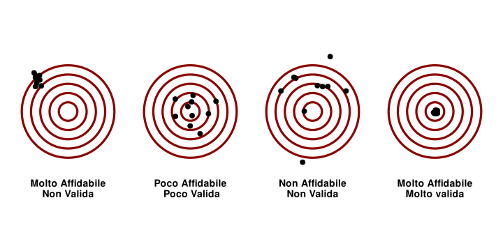
Validità di facciata (face validity)
Una misura ha validità di facciata se una persona non esperta leggendo gli item capisce chiaramente cosa l’item sta cercando di misurare. In altri termini capisce in modo chiaro l’operazionalizzazione (il legame tra indicatore e costrutto latente).
- Una misura con elevata validità di facciata è poco criticabile
- La validità di facciata è quantificata in modo soggettivo (intutivo) e non basato sulla teoria
- Essendo l’operazionalizzazione chiara e trasparente è più facile mentire o rispondere in funzione della desiderabilità sociale
Validità di contenuto
La validità di contenuto rappresenta il grado di vicinanza tra gli items ed il costrutto latente che si intende misurare. Potremmo dire che è il grado di bontà dell’operazionalizzazione in senso stretto. Degli items validi sono selezionati e valutati da esperti di quei costrutti latenti.
Una con validità di contenuto dovrebbe contenere items che coprono tutti gli aspetti (facets) di un certo costrutto latente e non sono legati ad aspetti di altri costrutti diversi.
La validità di contenuto deve considerare anche la popolazione di riferimento. Lo stesso costrutto latente (e.g., depressione) potrebbe avere caratteristiche diverse che devono essere catturate da indicatori (items) adatti.
Validità di costrutto
La validità di costrutto rappresenta quanto una misura è legata al costrutto di interesse. Viene quantificata non sulla singola misura ma in relazione ad altre misure. In particolare:
- Validità convergente: Una misura ha validità convergente se è associata (i.e., correlazione) con altre misure che dovrebbero essere legate al costrutto d’interesse. Ad esempio, diverse misure di depressione dovrebbero correlare tra loro.
- Validità divergente: Una misura ha validità divergente se non è associata con altre misure che non dovrebbero essere legate al costrutto d’interesse. Una misura di depressione non dovrebbe correlare con una misura di controllo degli impulsi se quest’ultimo costrutto non si presuppone essere teoricament legato alla depressione (esempio totalmente non evidence-based).
- validità fattoriale: Questo tipo di validità è legata all’analisi fattoriale (che non vedremo). Indica però quanto la struttura fattoriale ipotizzata dalla teoria (e.g., la depressione ha 3 fattori) viene confermata dalla misura utilizzata.
Validità fattoriale, un esempio
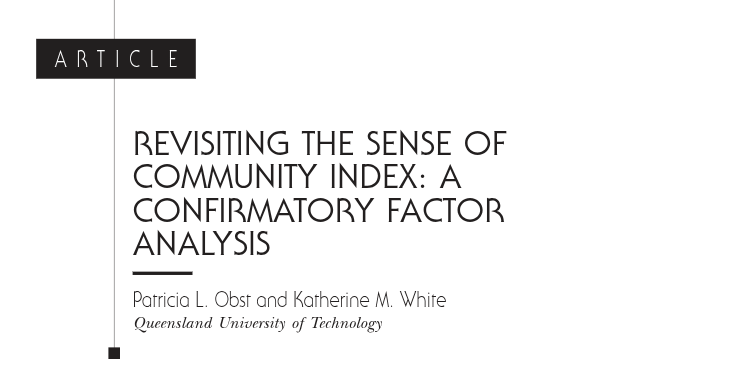
Obst & White (2004) hanno revisionato la scala Sense of Community Index (SCI) notando che non sempre la struttura fattoriale ipotizzata dalla teoria (McMillan & Chavis, 1986) venisse confermata dai dati notando che una soluzione a 4 fattori potrebbe essere più adeguata. In questo senso, la scala potrebbe avere validità fattoriale bassa.
E’ importante verificare la validità delle misure che utilizziamo per poter avere conclusioni più solide e valide dalle nostre ricerche. Anche in ottica applicata, è sempre importante valutare la validità delle misure.
Affidabilità test-retest
L’affidabilità test-retest indica la stabilità di una misurazione nel tempo. Se il costrutto latente si ipotizza essere stabile nel tempo considerato allora anche la sua misura dovrebbe essere consistente. Ovviamente questo tipo di affidabilità non è rilevante per costrutti che si ipotizza non essere stabili nel tempo (e.g., ansia di stato vs tratto).
Affidabilità tra giudici (interrater)
Se diversi giudici/sperimentatori giungono a risultati simili usando un indicatore in modo indipendente, allora quell’indicatore ha una buona affidabilità. E’ molto usata nel caso di procedure osservative o dove lo sperimentatore deve decidere autonomamente un certo giudizio o punteggio. La convergenza di diversi punteggi indipendenti migliora la misurazione ed il grado di similarità indica che la misura è stabile e/o che viene usata in modo consistente tra diversi giudici.
Affidabilità tra forme parallele
Questo tipo di affidabilità si valuta con set di items equivalenti da un punto di vista di criterio e validità ma comunque formulati in modo diverso. Essendo, in teoria, validi allo stesso modo dovrebbero anche fornire misurazioni consistenti.
In modo simile all’affidabilità interrater, forme parallele dello stesso strumento permettono di attenuare e/o rilevare errori specifici di una certa formulazione di item.
Consistenza interna
Questo tipo di affidabilità rappresenta quanto simili sono le risposte tra soggetti agli stessi item. L’idea è che soggetti diversi (al netto di differenze individuali) dovrebbero rispondere in modo simile agli stessi item.
Solitamente vengono usati indici che potreste aver sentito come l’Alpha di Cronbach. Una misura ha consistenza interna se, ad esempio, chi risponde valori elevati ad un certo item risponde con valori elevati anche ad un altro item (o il contrario).
Affidabilità e validità, alcuni esempi
Pensate a voler misurare l’ansia con un solo item chiedendo:
quanto ti senti agitatə in questo momento?
Questa misura è chiaramente valida (legata teoricamente al costrutto ansia) ma è molto instabile, poco precisa e può dipendere da molti fattori sia personali che contestuali.
L’errore di misura dell’indicatore ansia sarebbe molto pur essendo un indicatore teoricamente valido.
Affidabilità e validità, alcuni esempi
Un esempio invece di misure affidabili ma non per forza valide riguarda gli indici psicofisiogici. Immaginiamo di vedere la relazione tra indici psicofisiologici come il battito cardiaco e la depressione.
La strumentazione per misurare il battito cardiaco può essere molto affidabile e con poco errore di misura. Tuttavia il legame tra battito cardiaco e depressione può essere meno chiaro e non per forza del tutto valido.
Altri aspetti della misurazione
Sensibilità e range delle misure
Un altro aspetto importante riguarda la granularità delle misure. In altri termini, se siamo interessati a misurare variazioni nel costrutto latente (differenza di depressione tra due gruppi di individui) dobbiamo assicurarci che l’indicatore sia abbastanza sensibile per cogliere queste differenze.
Sarebbe come trovare la temperatura ideale ma possiamo regolarla solo di 5 gradi alla volta. Per quanto il termostato sia affidabile e valido come misura, la sua granularità non è adeguata.
Effetto soffitto o pavimento
In un certo senso legato alla granularità, la mia misura deve poter differenziare le diverse osservazioni ovvero non devono esserci effetti soffitto o pavimento.
Immaginate una domanda di matematica troppo difficile o troppo facile dove tuttə sbagliano o fanno corretto. Quella domanda non è una buona domande perchè non mi permette di distinguere le abilità delle mie osservazioni.
Effetto soffitto o pavimento
Un test troppo facile o difficile o una misura tarata in modo sbagliato (misura per soggetti sani su soggetti malati) riduce drasticamente la discriminatività.
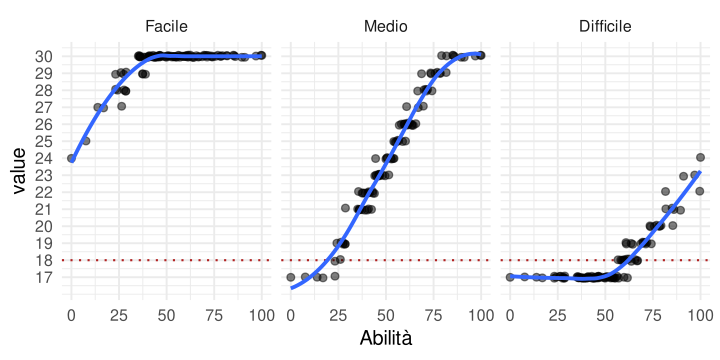
Sensibilità e range delle misure
Il problema del range range è molto serio e può impattare l’interpretazione dei risultati. L’effetto può variare in funzione del range che consideriamo.
Qualche esempio di ricerca
Quasi-sperimentale
Vediamo un esempio di ricerca quasi-sperimentale. Provate a trovare nel pdf i passaggi dove il disegno di ricerca è chiaramente spiegato.
Robinette, J. W., Piazza, J. R., & Stawski, R. S. (2025). Community crime and safety: An investigation of gender differences in the daily stress process. Journal of Community Psychology, 53, e23158. https://doi.org/10.1002/jcop.23158
Robinette et al. (2025)
Cluster-randomized controlled trial
Vediamo un esempio di randomized controlled trial (non esattamente quello classico). Provate a trovare nel pdf i passaggi dove il disegno di ricerca è chiaramente spiegato.
Johnson, J. K., Nápoles, A. M., Stewart, A. L., Max, W. B., Santoyo-Olsson, J., Freyre, R., Allison, T. A., & Gregorich, S. E. (2015). Study protocol for a cluster randomized trial of the Community of Voices choir intervention to promote the health and well-being of diverse older adults. BMC Public Health, 15, 1049. https://doi.org/10.1186/s12889-015-2395-9
Johnson et al. (2015)
Correlazionale (osservazionale) 1
Vediamo un esempio di ricerche osservazionali (correlazionali). Provate a trovare nel pdf i passaggi dove il disegno di ricerca è chiaramente spiegato.
Hill, T. G., & MacGillivray, M. (2024). Loneliness and sense of community are not two sides of the same coin: Identifying different determinants using the 2019 Nova Scotia Quality of Life data. Journal of Community Psychology, 52, 134–153. https://doi.org/10.1002/jcop.23089
Hill & MacGillivray (2024)
Correlazionale (osservazionale) 2
Vediamo un esempio di ricerche osservazionali (correlazionali). Provate a trovare nel pdf i passaggi dove il disegno di ricerca è chiaramente spiegato.
Benson, O. M., & Whitson, M. L. (2022). The protective role of sense of community and access to resources on college student stress and COVID-19-related daily life disruptions. Journal of Community Psychology, 50, 2746–2764. https://doi.org/10.1002/jcop.22817
Benson & Whitson (2022)
Bibliografia
American Educational Research Association, American Psychological Association, National Council on Measurement in Education, & Joint Committee on Standards for Educational and Psychological Testing (U.S.). (2014). Standards for educational and psychological testing (American Educational Research Association, American Psychological Association, & National Council on Measurement in Education, Eds.). American Educational Research Association.
Benson, O. M., & Whitson, M. L. (2022). The protective role of sense of community and access to resources on college student stress and COVID-19-related daily life disruptions. Journal of Community Psychology, 50, 2746–2764. https://doi.org/10.1002/jcop.22817
Hill, T. G., & MacGillivray, M. (2024). Loneliness and sense of community are not two sides of the same coin: Identifying different determinants using the 2019 Nova Scotia Quality of Life data. Journal of Community Psychology, 52, 134–153. https://doi.org/10.1002/jcop.23089
Johnson, J. K., Nápoles, A. M., Stewart, A. L., Max, W. B., Santoyo-Olsson, J., Freyre, R., Allison, T. A., & Gregorich, S. E. (2015). Study protocol for a cluster randomized trial of the Community of Voices choir intervention to promote the health and well-being of diverse older adults. BMC Public Health, 15, 1049. https://doi.org/10.1186/s12889-015-2395-9
McMillan, D. W., & Chavis, D. M. (1986). Sense of community: A definition and theory. Journal of Community Psychology, 14, 6–23. https://doi.org/10.1002/1520-6629(198601)14:1<6::aid-jcop2290140103>3.0.co;2-i
Obst, P. L., & White, K. M. (2004). Revisiting the Sense of Community Index: A confirmatory factor analysis. Journal of Community Psychology, 32, 691–705. https://doi.org/10.1002/jcop.20027
Petersen, I. T. (2024). Principles of psychological assessment: With applied examples in R (1st Edition). Chapman; Hall/CRC. https://doi.org/10.1201/9781003357421
Robinette, J. W., Piazza, J. R., & Stawski, R. S. (2025). Community crime and safety: An investigation of gender differences in the daily stress process. Journal of Community Psychology, 53, e23158. https://doi.org/10.1002/jcop.23158
Stevens, S. S. (1946). On the theory of scales of measurement. Science (New York, N.Y.), 103, 677–680. https://doi.org/10.1126/science.103.2684.677